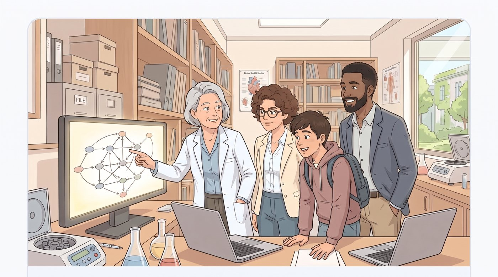

DEG analysis
Identify differentially expressed genes and enriched pathways between phenotypes.
Autonomous biomarker discovery for multi-omics research — from a raw FASTQ file to a validated, FDA-grade causal target.

Capabilities map to real analysis modules in the product — language taken from the actual pipeline presets, not invented marketing stats.
Identify differentially expressed genes and enriched pathways between phenotypes.
Enrich and interpret pathway-level signals from ranked gene lists, including GSEA-style enrichment.
Rank and prioritize genes by biological significance and translational relevance.
Estimate cell-type proportions and cell-state signatures from bulk transcriptomic profiles.
Retrieve and harmonize data from public and private sources into analysis-ready cohorts.
Directed reasoning (SIGNOR-style), GWAS association, and Mendelian-randomization workflows.
Single-cell RNA-seq: clustering, cell types, markers, and states.
Analyze expression perturbations using DepMap, L1000, and related integrated datasets.
A simple path from data to interpretable outputs — aligned with how the platform's analysis graph actually runs.
Upload study data or retrieve and harmonize cohorts from supported sources so analyses start from consistent inputs.
The agentic workflow plans multi-step pipelines — DEG, pathways, prioritization, deconvolution, and related modules — then executes them as configured runs.
Inspect outputs, figures, and reports in the product workspace, then iterate on the next question without leaving the platform.
Every real question — from "where do I even start?" to "how do I produce FDA-grade causal evidence?" — with a plain-language answer and its illustration.
Whatever your seat at the bench or the desk — the companion meets you at your level.
BiRAGAS answers the questions bioinformaticians actually ask — and tells you how confident it is in every answer.